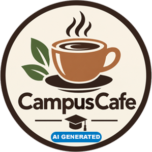
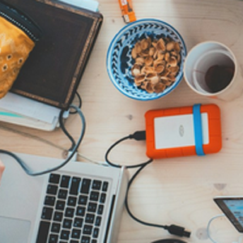

Uusi opiskelija ruokala on avattu
Pasilan kampuksen läheisyyteen on avattu uusi opiskelijaruokalaSuosittu artisti esiintyi avajaisissa
Pasilan kampuksen avajaisissa esiintyi yksi tämän hetken valovoimaisimmista artisteista. Tilaisuus striimattiin muihin kampuksille.
Uusi kahvila CampusCafe avattu
CampusCafe avasi ovensa Pasilan kampuksella. Avajaistarjoukset jatkuvat koko viikon.
Johdanto digitaalisiin palveluihin -opintojaksolla uusi toimeksianto
Toimeksiannosa suunnitellaan ja toteutetaan opiskelijoille suunnattua uutta palvelua helpottamaan heidän arkeaan.Ilmainen joogaviikko 11.- 15.11.
Marraskuussa toteutetaan yleisön pyynnöstä suuren suosion saanut joogaviikko jo viidennen kerran.